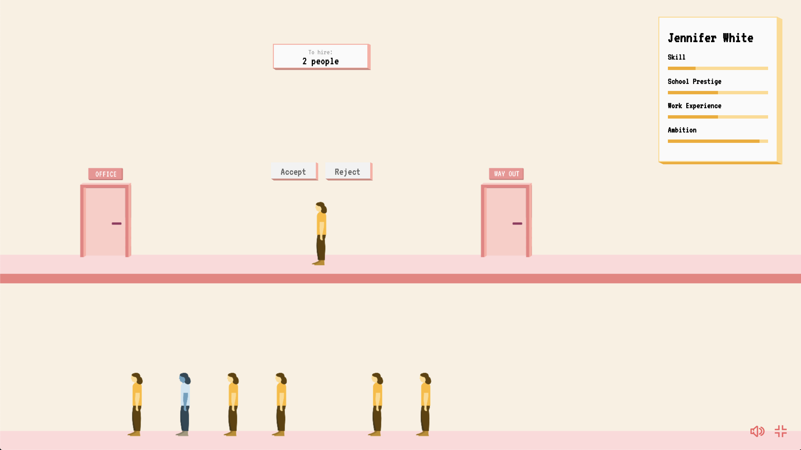

This blog post was originally intended to be a TED Talk given at TEDxRedmond but I unfortunately was never accepted. However, I did learn a lot in the process of writing it, and I hope you get some value out of it even its presented through just text.
Hey Google
Take a picture in 5 seconds. Say cheese!
See that? This is just one of many examples of where AI is becoming a larger part of what we accept as normal. What seemed far-fetched and straight out of science fiction a few years ago is now becoming a reality.
Today, tech giants deploy AI to dictate what we see, hear, buy – even feel and think. They control what kind of news we see every morning, suggest places to go, and even drive our cars. In order for us to have a healthy relationship with this technology, we have to adapt as quickly as it is advancing. In doing so, we need to ask ourselves: what kind of decisions AI should be allowed to make?
Sure, most of you in the audience may be comfortable letting an AI decide what kind of music to add to your Spotify playlist, but when an AI needs to decide what kind of jail time a criminal should face we all get a little squeamish.
In fact, let me give you a few examples of decisions that AI make every single day and see whether you would be comfortable with an AI making that same decision.
 Google AI Blog, 2018
Would you be comfortable with an AI helping doctors to identify cancerous tumours?
Google AI Blog, 2018
Would you be comfortable with an AI helping doctors to identify cancerous tumours?
survivalofthebestfit.com How about an AI helping companies decide who to hire based on only your name, age, gender, and resume?
 @teenybiscuit
The classic image detection example: are these chihuahuas or muffins?
@teenybiscuit
The classic image detection example: are these chihuahuas or muffins?
 Illustration: Simon Landrein
How about the trolley problem? Should a self-driving car — given no other option — kill A) the child or B) the elderly person?
Illustration: Simon Landrein
How about the trolley problem? Should a self-driving car — given no other option — kill A) the child or B) the elderly person?
As you can see, there is a really obvious difference each of those decisions that were proposed. In the tumour example and chihuahua example, you likely weren’t super bothered if an AI were to make that decision. Yet for the hiring example and the self-driving car example, you likely were more uncertain.
What we can see from this is that there is a difference between objective and subjective problems. In the tumour and chihuahua examples, we were mostly comfortable with that decision being made because there is a clear ‘right’ or ‘wrong.’ However, in the case of the hiring example and self-driving car example, the subjectivity makes it difficult. A lot of it has to do with what kind of environment we were raised in and how each of us sees the world. Everyone is born with some kind of bias, favouring certain ways of viewing the world.
AI can do a lot of really great things such as helping doctors identify tumours or interpret the world for the deaf. But when used improperly, that subjectivity can propel some of the worst biases we have as humans.
Garbage in, garbage out
There’s a timeless saying “garbage in, garbage out” in the field of Computer Science which essentially states that bad data or bad input will produce an output that’s of equal quality. This holds true for almost all the tech we use today, from trading algorithms to search results. If what we put into the system is inherently unclear or flawed, then the output will also give back something that’s ‘wrong’ or doesn’t align with our objectives.
However, this saying “garbage in, garbage out” is most prevalent in the AI which sits at the forefront of this tech revolution. AI, in one form or another, is still created by humans, who are imperfect, make mistakes, and are inherently biased.
Interestingly, there are two distinct ways that this bias can shine through.
1. Problem definition
The first is in the problem definition. When creating an AI, we need to define an objective for it. That means putting something vague like “create a realistic human-sounding voice” or “help me translate this speech to French” into definitive, and certain terms and mathematical concepts. How do we do that? Because we don’t have algorithms that do this step for us, this is usually done by a team of machine learning engineers. They are responsible for deciding how to represent our ‘objective’ in terms of penalties and rewards. This also means that how the team of engineers decide to represent the problem is a product of their biases.
Take Amazon for example. In 2014, Amazon decided to create a recruitment engine that was able to look at a job applicant and rate them from a one-star rating to a five-star rating. However, by 2015, Amazon realized that their software was not evaluating candidates for positions related to tech in a gender-neutral way1. Although unintentionally, Amazon’s engineers included a gender field. The algorithm, after sifting through 10 years worth of resumes, began to favour men and penalize women. After deeper inspection, this was most likely an unfortunate reflection of the male-dominated tech industry. The lesson is clear. The algorithm served to reflect this bias that was observed in the past.
2. Lack of Data Diversity
The second, less obvious way bias can poison AI is with data diversity — or rather the lack of it. I think the best way to explain this is through a metaphor. Imagine the AI as a small child. It likes to learn from its environment. If this child were to be raised in a racist family, it will almost undoubtedly hold similar views in the future. This is a very similar case for AI. It learns from the environment and data it’s given.
One case of this is the very first iteration of Google Photo’s image classification feature back in 2015. This feature claimed to be able to identify people, places, and things with high accuracy. Twitter user @jackyalcine found that the algorithm identified people with darker skin as gorillas2. Google quickly was able to work and manually ‘patch’ the issue, but the actual issue was much deeper – and it had to do with the data used. In this case, the dataset that Google used to train their algorithm had an over proportional amount of middle-aged Caucasian people under the category of ‘people.’ This meant that while the recognition accuracy was really high for that select group of people, the accuracy for people of colour was significantly worse.
From both cases, we can see that an over-focus on results and accuracy can cause these companies to ignore these biases. When the deadline is too tight or the manager sets an expectation for a “10% increase in accuracy,” there is a very strong incentive to ignore the ‘edge cases’ or things that happen very rarely.
Too often our society is focused on the raw accuracy that we forget that the same accuracy metric is something that we set for ourselves – created arbitrarily by humans which have bias (see: Goodhart’s Law).
Unfortunately, this results in things like the Google Photos and Amazon Hiring cases.
Fairness in AI
Truth is, data lacks context. While the trends in the data may show that in the past there have been more men in the women in the workforce, the majority of the population can agree that we are moving away from that more traditional view into more of an equal playing ground. Unfortunately, these models that we create don’t have a deeper understanding of these changes and as a result, produces naïve predictions that we believe are wrong or ‘garbage.’ But is it really? Is it really only a ‘bad’ result because of what we define as fair or right?
 ProPublica, 2016
ProPublica, 2016
We can take a look at the COMPAS system which is a piece of software used by U.S. courts to assess the likelihood of a criminal to reoffend. ProPublica, a non-profit newsroom, did an investigation back in 20163 and claimed that COMPAS was biased against those of African descent — citing that it overestimated the false positive rate of reoffending for those of African descent by almost twice as high as those for Caucasians. ProPublica reasoned that a fair algorithm would not have such a big difference.
So, is COMPAS fair?
Well, there’s no concrete answer. The algorithm never had any access to any contextual information about the neighbourhoods or the actual situation for each of the offenses. Was the area more heavily policed because it was a predominantly black neighbourhood? Were the officers themselves biased in making arrests?
Even more interestingly, a study done at Dartmouth4 showed that random volunteers, when given the same information as the COMPAS algorithm, achieved a nearly identical accuracy of identifying the rate of recidivism.
This is interesting. This means that either COMPAS is accurate or holds the exact same biases as we do as a society. Unfortunately, this is a problem that I don’t think we can solve, so we don’t have a solid definition as to what makes an algorithm fair. But what is clear, is that there is bias in play here, whether that be through the police, the companies, the actual algorithm, or society itself. This bias is what causes that “subjectivity” and “garbage in.” This is what is preventing us from making ‘fairer’ AI and applying AI to more tasks.
The inevitability of bias
The point is, unless we work to prevent, catch, and deter bias, it will inevitably occur. One of the biggest problems in the field of AI is that so many of the models exist in a black box, meaning that its inner workings are only known by a select few. This makes it near impossible to identify and train out bias. Machine intelligence will become almost integral to our lives, becoming less visible in the process, and AI’s bias bug will get harder to beat. Our time to act is now.
What we can do
So? What can we, as the next generation, do to help?
First, we need to build a better understanding of how the AI systems we are building work. Through this understanding, we can better trust and, as a result, effectively manage the emerging generation of AI. So, don’t be afraid to learn that programming language you heard about. Read up on how that cool translation algorithm works.
Secondly, we need to diversify. Diversify not only in the sense of having better representation in datasets, but in tech. Next time you pitch a new product, or create a new project, ask yourself this:
“How many people have you considered before you make that decision?”
Let’s design for all. Consider people of different ethnic groups, sexualities, income, just to name a few. By having more representation in these teams, AI can cater to more than just that select group of people who are western, educated, and rich. Instead, by bringing in a fresh perspective on the problems that these teams are trying to tackle, they can create innovation that benefits a whole range of communities.
With increased diversity and representation, the Google Photo misidentification problem never would have happened. Together, we can help to build a future where diversity is no longer an issue in both machine learning models and tech, but society too. Where we don’t just use AI mindlessly but understand it and use it in such a way that it helps to empower humanity. Where we can work towards a future where we can begin to trust the more subjective decisions that an AI can make.
Together, we can make that future a reality tomorrow. Thanks for coming to my TED talk (unironically this time).